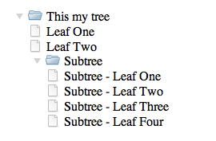

YUI TreeView

The TreeView widget provides a rich, ARIA-enhanced visual representation of hierarchical data. Any given "TreeView" is actually a nested structure of YUI widgets consisting of:
TreeLeaf, aWidgetthat mixes in the genericWidgetChildclass. A TreeLeaf has no children.TreeView, aWidgetthat mixes in theWidgetParentandWidgetChildclasses. ATreeViewmay contain zero or more childTreeLeaforTreeViewobjects.
YUI 3 TreeView is built for high performance.
Its rendering mechanism uses
Y.Handlebars,
which is fast enough to support even very large sets of DOM nodes.
By default, TreeView loads all its nodes on demand,
creating and rendering child nodes only when they're actually needed.
Getting Started
To include the source files for and its dependencies, first load the YUI seed file if you haven't already loaded it.
<script src="http://yui.yahooapis.com//build/yui/yui-min.js"></script>
Next, create a new YUI instance for your application and populate it with the
modules you need by specifying them as arguments to the YUI().use() method.
YUI will automatically load any dependencies required by the modules you
specify.
<script>
// Create a new YUI instance and populate it with the required modules.
YUI().use(, function (Y) {
// is available and ready for use. Add implementation
// code here.
});
</script>
For more information on creating YUI instances and on the
use() method, see the
documentation for the YUI Global Object.
Using TreeView
Quick Start
To create a basic TreeView instance,
first create a div to render the tree into,
with a class of yui3-sam-skin
(or alternatively, set yui3-sam-skin on
the body or some other containing element):
<div id="toc" class="yui3-skin-sam">
Once you have a container div, give the tree a label and some child leaves. Then render it into the container:
YUI().use('treeview', function (Y) {
var tree = new Y.TreeView({
label: 'My Novel',
children: [
{ label: 'Chapter One' },
{ label: 'Chapter Two' }
]
});
tree.render('#toc');
});
Creating Fancier Nodes
Labels don't necessarily have to be plain text. You can also insert HTML:
var tree = new Y.TreeView({
label: '<b>My Novel</b>',
children: [
{ label: '<a href="./ch01.html">Chapter One</a>' },
{ label: '<a href="./ch02.html">Chapter Two</a>' }
]
});
You can also supply an id property
along with the label:
children: [
{ id: 'ch01', label: 'Chapter One' },
{ id: 'ch02', label: 'Chapter Two' }
]
This enables you to provide a known, user-friendly id attribute
on each <li> that contains the node.
Otherwise, YUI automatically generates an id
using Y.guid().
For more advanced label customization,
you can override the Handlebars templates
that define TreeView and TreeLeaf markup,
such as TreeView.prototype.TREEVIEWLABEL_TEMPLATE.
Creating Subtrees
ATreeView's constructor provides a
children configuration property that
enables you to initially populate the tree with child nodes.
As shown in the Quick Start,
if you add a simple object with just a label,
the TreeView creates a child TreeLeaf node.
However, if you also supply a type of "TreeView",
the TreeView creates a child TreeView node,
which can itself have child nodes:
var tree = new Y.TreeView({
label : 'Main Tree',
children: [
{ label: 'Leaf One' },
{ label: 'Leaf Two' },
{ type: 'TreeView', label: 'Subtree', children: [
{ label: 'Subtree - Leaf One' },
{ label: 'Subtree - Leaf Two' },
{ label: 'Subtree - Leaf Three' },
{ label: 'Subtree - Leaf Four' }
]}
]
});
tree.render('#demo');
It's worth reiterating that
a YUI 3 TreeView mixes in the behaviors of both WidgetParent and WidgetChild,
and thus can serve as either a parent node, a child node, or both.
As a corollary, in a YUI 3 TreeView
there is also nothing terribly special
about the top-level TreeView object.
(There is one minor difference in that
the top-level TreeView has an ARIA role of "tree",
while lower-level TreeViews have an ARIA role of "group".)
This architecture is in contrast with YUI 2 TreeView,
which had a master YAHOO.widget.TreeView
that contained various objects derived from YAHOO.widget.Node.
Listening to the Trees
Like all YUI widgets, TreeView offers a suite of custom events,
including a suite of "Default UI" custom events
that mirror DOM events that occur within the tree.
For example, to detect when a TreeLeaf
(but not a TreeView) has been clicked,
you can set an event handler on the TreeView instance
and listen for the treeleaf:click custom event:
var tree = new Y.TreeView({
label: 'Far Out',
children: [
{ label: 'Groovy' },
{ label: 'Moonflower' }
{ label: 'Star Child' }
]
});
tree.render('#gaia');
tree.on('treeleaf:click', function (ev) {
Y.log('You clicked on: ' + ev.target.get('label'));
});
Listening for custom UI events has some advantages
over listening for DOM events,
but sometimes the actual thing you want to listen for
is an attribute change event.
For example, every TreeView has a collapsed attribute
indicating the expand/collapse state of the tree.
If you wanted to detect node expansions,
you could set an event handler for collapsedChange events:
// Use 'after()' rather than 'on()' to listen only for
// *successful* (i.e. un-prevented) state changes.
tree.after('collapsedChange', function (ev) {
if (ev.newVal === false) {
Y.log('Tree expanded!');
}
});
If you specifically care about checking for tree state changes, listening for state change events has several advantages over listening for DOM events:
- It avoids being confused by repeated clicks on the same node.
- It avoids depending on the internal DOM structure of the tree.
- It future-proofs your code against other user actions that might expand the tree, such as touches or keystrokes.
Manipulating Tree State
Expanding/Collapsing a Tree
By default, a TreeView node automatically toggles
its expand/collapse state in response to user clicks.
If you need to programatically expand or collapse a tree,
the TreeView API offers these methods:
// Collapses a tree node (non-recursive) tree.collapse(); // Expands a tree node (non-recursive) tree.expand(); // Toggles the state; if collapsed, expand (and vice-versa). tree.toggleTreeState();
Traversing and Mutating a Tree as an ArrayList
TreeView provides a number of methods and attributes for
inspecting and mutating its own contents,
nearly all of which inherit from the
WidgetParent API,
which in turn inherit from or override the
ArrayList API.
If you are familiar with hierarchical widgets such as
TabView,
or even if you've at least used a YUI ArrayList or NodeList before,
you probably have most of the
TreeView API at your fingertips.
To determine the number of direct children of a tree node:
var numChildren = tree.size();
To grab the second child of a tree node:
var secondChild = tree.item(1);
To remove the second child of a tree node:
tree.item(1).remove(); tree.remove(1); // alternatively
To add a new leaf node dynamically:
tree.add({label: '<span class='new-node'>New leaf</span>'});
To iterate over the tree's children:
tree.each(function (leaf) {
leaf.set('label', 'CHANGED');
});
Configuring TreeView
Except for label, all configuration attributes are optional. This list only contains the most interesting attributes. For a complete list of all attributes, please refer to the API docs.
TreeView Attributes
| Attribute | Default | Description |
|---|---|---|
collapsed |
true |
A boolean indicating whether the TreeView is collapsed.
true if the tree's children are currently hidden,
false if they are currently expanded.
To change the tree's expansion state,
call expand() or collapse().
|
label |
Empty string |
[Required] A String snippet of text or HTML
to display at the top level of the tree.
Individual TreeLeaf objects have their own label attribute.
|
lazyLoad |
true |
Specifies whether the tree should generate DOM nodes
for its hidden child leaves on demand,
when the user expands that branch of the tree.
Setting lazyLoad to false causes the TreeView to
generate child DOM nodes ahead of time,
which will likely decrease perceived performance for large trees.
You can only change lazyLoad when you first instantiate the tree.
|
For the full list of attributes TreeView inherits from WidgetParent and WidgetChild,
refer to the WidgetParent
and WidgetChild API documentation.
TreeLeaf Attributes
| Attribute | Default | Description |
|---|---|---|
label |
Empty string | [Required] A String that provides a snippet of text or HTML to display for the leaf. |
parent |
null |
A reference to the TreeLeaf's parent TreeView object.
|
depth |
0 |
A Number indicating the depth of this leaf
relative to the root of the tree hierarchy.
You cannot change this attribute directly,
but this attribute will correctly reflect the depth
if you use add() and remove() to mutate the
tree's structure.
|
root |
null |
A reference to the root TreeView object.
|
For the full list of attributes TreeLeaf inherits from WidgetChild,
refer to the WidgetChild API documentation.